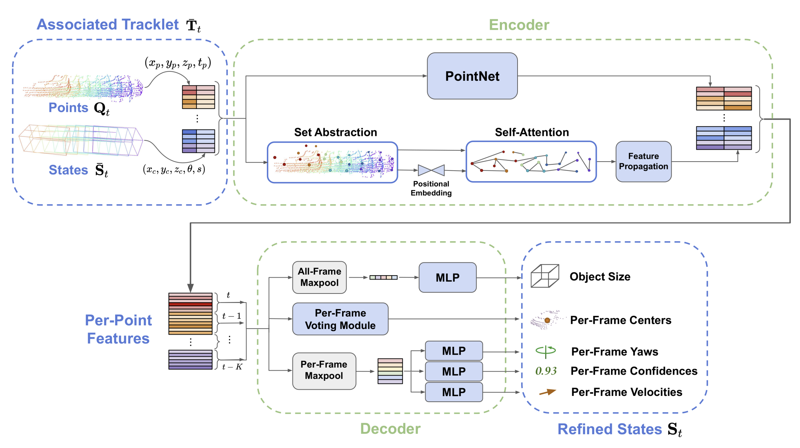

3D multi-object tracking aims to uniquely and consistently
identify all mobile entities through time. Despite the rich spatiotemporal information available in this setting, current 3D tracking methods primarily rely on abstracted information and limited history, e.g.
single-frame object bounding boxes. In this work, we develop a holistic
representation of traffic scenes that leverages both spatial and temporal information of the actors in the scene. Specifically, we reformulate
tracking as a spatiotemporal problem by representing tracked objects as
sequences of time-stamped points and bounding boxes over a long temporal history. At each timestamp, we improve the location and motion
estimates of our tracked objects through learned refinement over the
full sequence of object history. By considering time and space jointly,
our representation naturally encodes fundamental physical priors such
as object permanence and consistency across time. Our spatiotemporal
tracking framework achieves state-of-the-art performance on the Waymo
and nuScenes benchmarks.
Method Overview
The core concept behind SpOT is to learn object-level motion and geometry from a large set of real-world object
sequences. We generate hundreds of thousands of training sequences from the nuScenes and Waymo Open datasets.
In order to efficiently and robustly understand object-level motion, SpOT trains a sequence-to-sequence
refinement network on per-class training sequences.

The sequence-to-sequence refinement network learns to predict a refined state trajectory and velocities
to be used for subsequent tracking associations.
After implicitly learning object geometry and motion via its sequence-to-sequence refinement network,
SpOT iteratively integrates sequence refinements into an online tracking-by-detection framework.
Our optimization procedure leverages HuMoR to recover plausible motions from many
modalities even under noise and occlusions.
Qualitative Tracking Results
In contrast to previous method CenterPoint,
SpOT efficiently stores and reasons over large object history during online tracking.
In addition to quantitative improvements reported in the main paper,
SpOT provides clear qualitative improvements. Below we show these improvements on the Waymo Open Dataset.
Pedestrians
CenterPoint
SpOT
Vehicles
CenterPoint
SpOT
Acknowledgments
This work was supported by grants from the Toyota Research Institute (TRI) University 2.0 program, a Vannevar Bush Faculty Fellowship, and a gift from the Amazon Research Awards program. Toyota Research
Institute (“TRI”) provided funds to assist the authors with their research but
this article solely reflects the opinions and conclusions of its authors and not
TRI or any other Toyota entity.
@inproceedings{stearns2022spot,
author={Stearns, Colton and Rempe, Davis and Li, Jie and Ambres, Rares and Zakharov, Sergey and Guizilini, Vitor and Yang, Yanchao and Guibas, Leonidas J.},
title={SpOT: Spatiotemporal Modeling for 3D Object Tracking},
booktitle={European Conference on Computer Vision (ECCV)},
year={2022}
}